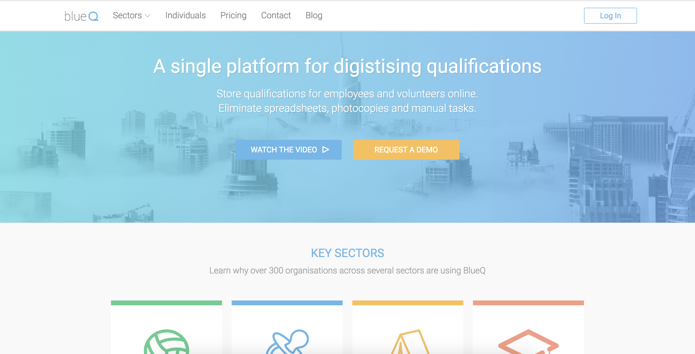

Working against a set of designs given to me by a contracted UI designer, I was tasked with building the company's static website from scratch. I used Bootstrap for it's grid system and responsive design.
To create modules (such as the navbar) that I could write once and import multiple times, I used Jekyll. Through Jekyll, sales staff could create lander pages for potential clients in markdown. I created a variety of layouts to suit different organisations.
I also used Buddy, a system which could build Jekyll sites from Github and deploy it automatically through FTP. This meant changes to the website's master branch could go live instantly.
